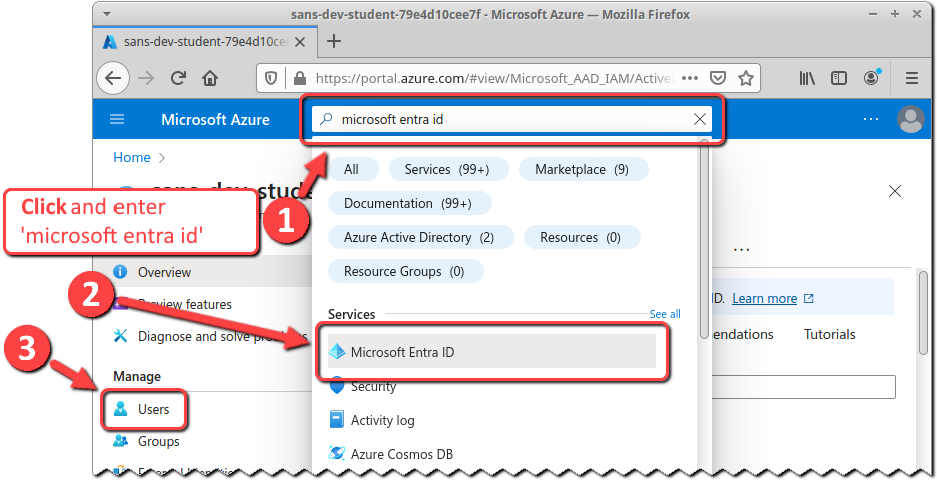

Azure Manual Reconnaissance
Objectives
- Authenticate to Azure using PowersShell.
- Enumerate application administrators.
- Enumerate service principals with the Privileged Role Administrator role.
Introduction
Now that we've spun up a test Microsoft Entra ID environment (see the Azure Environment Setup lab) to replicate key aspects of Tyrell Corp's Microsoft Entra ID environment, we need to follow up on the potential security issues that we identified as part of that process. We'll start by searching for privilege escalation attack primitives that could allow a Tyrell Corp developer to assume excessive privileges.
Manual Reconnaissance vs. Automated Tools
While automated tools (both command-line and GUI) exist to perform reconnaissance and map attack pathways, we might not always have that sort of 'easy button' tool available to us. As security architects and engineers, it's important to know how to use basic CLI commands -- and to understand how they work!
The PowerShell scripting language can be an effective tool for both blue and red teams. In this lab -- using nothing more than a web browser, the Azure Cloud Shell service, and a PowerShell terminal via Cloud Shell -- we probe and reconnoiter our environment to identify potential weaknesses.
Lab Preparation
Before starting this lab, you must have already completed the Azure Environment Setup lab.
Current State
At this point, you should:
-
Be logged into https://portal.azure.com with your Azure account.
-
Have created the test Microsoft Entra ID environment replicating Tyrell Corp's fictitious production environment.
-
Have your own copy of the Azure-Notes workbook open, recording information up to this point about your Azure account and Microsoft Entra ID environment.
Step-by-Step Instructions
1. Identify Non-Privileged Account
1. Identify Non-Privileged Account
While we already know which accounts have are assigned privileged roles, we need to simulate an attack path where an attacker or developer has obtained access to a non-privileged Microsoft Entra ID account and then explores the environment to find privileged accounts and applications.
In this step, you will choose a non-privileged Microsoft Entra ID user in Tyrell Corp's Microsoft Entra ID environment, and use PowerShell commands to authenticate as that user.
-
Since we want to start with a non-privileged Microsoft Entra ID user, we specifically do not want to use the user to which the PurpleCloud script assigned the Application Administrator role.
Switch to the Azure-Notes workbook and identify the Application Admin Username value, so that we can avoid picking that name as our non-privileged user.
-
Switch back to the browser tab accessing the Azure portal https://portal.azure.com.
URL
https://portal.azure.com -
Access the Azure portal's Microsoft Entra ID service page.
Navigate to the Microsoft Entra ID page, and select Users.

The Users page will identify the total number of users in the Microsoft Entra ID tenant, and list the users.

-
Identify any test user except the user that was assigned the Application Administrator role, and click on the 'copy' icon to the right of their User principal name (UPN).
Don't pick your primary Azure account, either!
The UPN is the user's 'username@primary-domain'. We will use this value to authenticate as this user.
-
Since we'll need this value later, let's save it in Azure-Notes workbook. Switch to the Azure-Notes workbook and paste the UPN into the cell for the 'Random User UPN' value.
You now have the UPN for a non-privileged user, that you can use to explore the environment as an attacker would.
2. Start Azure Cloud Shell Session - PowerShell
2. Start Azure Cloud Shell Session - PowerShell
Now let's start a Cloud Shell session so that we can perform our manual reconnaissance. This is similar to the steps in the previous lab - except that this time we'll use PowerShell.
-
Click on the Cloud Shell icon at the top of the page, immediately to the right of the search bar.

Maximizing the Shell
You can maximize the shell by clicking on the 'maximize' icon near the top-right of the terminal window.

-
Cloud Shell will default to bash since that's what we previously selected as our Cloud Shell shell.
Click on the Switch to PowerShell link in the top-left corner of the Cloud Shell terminal.

You will be presented with a Switch to PowerShell in Cloud Shell prompt. Click on the Confirm command button.

After a minute, your web browser tab will display a PowerShell terminal prompt.

The standard Azure Cloud Shell prompt includes the account user name, and so will be different than the prompt in the screenshot above.
-
Let's make the terminal output slightly more readable by adding a line-break before the prompt. Execute the following command:
Cloud Shell PowerShell Input
function prompt { $(if (Test-Path variable:/PSDebugContext) { '[DBG]: ' } else { '' }) + "`n" + 'PS ' + $(Get-Location) + $(if ($NestedPromptLevel -ge 1) { '>>' }) + '> ' }Copy and Paste with the Cloud Shell Terminal
The Cloud Shell terminal is running inside of a web browser, and the shortcut keys that you're used to might not work as you expect.
To paste content into the terminal, right-click in the terminal and select Paste from the context menu.
To copy content from the terminal window, click and drag to select text, right-click to activate the context menu, and select Copy from the context menu.
Your output should be similar to the following:
Cloud Shell PowerShell Output
PS /home/sec530-labs-azure-sec530-labs-xp> function prompt { >> $(if (Test-Path variable:/PSDebugContext) { '[DBG]: ' } >> else { '' }) + "`n" + 'PS ' + $(Get-Location) + >> $(if ($NestedPromptLevel -ge 1) { '>>' }) + '> ' >> } PS /home/sec530-labs-azure-sec530-labs-xp>This will stay in effect for the duration of this Cloud Shell session.
Restoring the Shell Prompt
If you decide that you'd prefer to use the original shell prompt, then you can execute the following command:
Cloud Shell PowerShell Input
function prompt { $(if (Test-Path variable:/PSDebugContext) { '[DBG]: ' } else { '' }) + 'PS ' + $(Get-Location) + $(if ($NestedPromptLevel -ge 1) { '>>' }) + '> ' }You could also simply exit and restart your Cloud Shell session -- but note that any changes to the shell environment, including setting environment variables, will be have to be redone!
Permanently Changing the Shell Prompt
If you wanted to change the shell prompt permanently, then you could execute the following commands:
Cloud Shell PowerShell Input
New-Item -Path $Profile.CurrentUserAllHosts -ItemType "file" -Force @' function prompt { $(if (Test-Path variable:/PSDebugContext) { '[DBG]: ' } else { '' }) + "`n" + 'PS ' + $(Get-Location) + $(if ($NestedPromptLevel -ge 1) { '>>' }) + '> ' } '@ > $Profile.CurrentUserAllHostsYour output should be similar to the following:
Cloud Shell PowerShell Output
PS /home/sec530-labs-azure-sec530-labs-xp> New-Item -Path $Profile.CurrentUserAllHosts -ItemType "file" -Force Directory: /home/sec530-labs-azure-sec530-labs-xp/.config/PowerShell UnixMode User Group LastWriteTime Size Name -------- ---- ----- ------------- ---- ---- -rw-r--r-- sec530-labs-azur sec530-labs-azur 9/13/2023 22:49 0 profile.ps1 e-sec530-labs-xp e-sec530-labs-xp PS /home/sec530-labs-azure-sec530-labs-xp> @' >> function prompt { >> $(if (Test-Path variable:/PSDebugContext) { '[DBG]: ' } >> else { '' }) + "`n" + 'PS ' + $(Get-Location) + >> $(if ($NestedPromptLevel -ge 1) { '>>' }) + '> ' >> } >> '@ > $Profile.CurrentUserAllHosts PS /home/sec530-labs-azure-sec530-labs-xp>
3. Authenticate to Azure
3. Authenticate to Azure
Now let's authenticate with our non-privileged account so that we can use PowerShell commands to interact with Microsoft Entra ID!
-
We'll need the user name and password of the UPN of the random user that we identified earlier, and would like to set environment variables for ease of re-use. The easiest way to set the environment variables is to copy the appropriate commands from calculated cells in your Azure-Notes workbook.
What if I Didn't Record the Random Password?
If you didn't record the random password, then check out the the previous lab for tips on retrieving the it.
Copy the contents of cells L12:L13.
Now paste the copied cells to your Cloud Shell terminal window.
Then execute the commands below to verify that the values are set correctly:
Cloud Shell PowerShell Input
${PLAINTEXT_PASSWORD} ${USER_UPN}Your output should be similar to the following:
Cloud Shell PowerShell Output
PS /home/sec530-labs-azure-sec530-labs-xp> $PLAINTEXT_PASSWORD='amusing-parakeet-hSbg' PS /home/sec530-labs-azure-sec530-labs-xp> $USER_UPN='alexisblair@sansdevstudent79e4d10cee7f.onmicrosoft.com' PS /home/sec530-labs-azure-sec530-labs-xp> ${PLAINTEXT_PASSWORD} amusing-parakeet-hSbg PS /home/sec530-labs-azure-sec530-labs-xp> ${USER_UPN} alexisblair@sansdevstudent79e4d10cee7f.onmicrosoft.com PS /home/sec530-labs-azure-sec530-labs-xp>Make sure that the username and password displayed in the output match that of the random user that you selected!
Security Warning
Saving a plaintext password in a file or variable is definitely not a strong security practice, and not something we'd want to do on a production system!
-
PowerShell supports the creation and use of 'secure strings' to help protect confidential text. We need to convert our plaintext password to a SecureString object, which will be used for authentication to Microsoft Entra ID.
Microsoft SecureString
When converting plaintext to a secure string, the original plaintext is encrypted for privacy and then deleted from computer memory1. The secure string is instantiated as a .NET SecureString object, which is part of the System.Security namespace.2
SecureString objects are protected in several ways:2
-
The value is not visible as plaintext in memory.
-
A single copy is kept in memory; vs. standard strings that can be copied, moved, and swapped to disk.
-
Secure memory disposal methods are implemented.
Execute the following command to create our PowerShell SecureString object:
Cloud Shell PowerShell Input
$SECURE_PASSWORD=ConvertTo-SecureString "${PLAINTEXT_PASSWORD}" -AsPlainText -ForceYour output should be similar to the following:
Cloud Shell PowerShell Output
PS /home/sec530-labs-azure-sec530-labs-xp> $SECURE_PASSWORD=ConvertTo-SecureString "${PLAINTEXT_PASSWORD}" -AsPlainText -Force PS /home/sec530-labs-azure-sec530-labs-xp>Security Warning
Passing a plaintext value on the command line - including with the ConvertTo-SecurString cmdlet - leaves a copy of the plaintext value in the command-line history.
In our case, we're using an environment variable in our command and so aren't leaving the plaintext value in the command-ine history -- but saving a plaintext password in a variable to begin with isn't something we'd want to do on a production system!
(not) Viewing a SecureString Value
You can't. That's part of the point of a SecureString object.
You can execute the following command:
Cloud Shell PowerShell Input
${SECURE_PASSWORD}But all you'll get back is the fact that this is a SecureString:
Cloud Shell PowerShell Output
PS /home/sec530-labs-azure-sec530-labs-xp> ${SECURE_PASSWORD} System.Security.SecureString PS /home/sec530-labs-azure-sec530-labs-xp> -
-
Next, we need to create a PSCredential object3 that we can pass as a parameter to the Connect-AzureAD command.
Execute the following commands to create the object and display its value:
Cloud Shell PowerShell Input
$CREDENTIAL=New-Object System.Management.Automation.PSCredential(${USER_UPN}, ${SECURE_PASSWORD}) ${CREDENTIAL} | Format-ListYour output should be similar to:
Cloud Shell PowerShell Output
PS /home/sec530-labs-azure-sec530-labs-xp> $CREDENTIAL=New-Object System.Management.Automation.PSCredential(${USER_UPN}, ${SECURE_PASSWORD}) PS /home/sec530-labs-azure-sec530-labs-xp> ${CREDENTIAL} | Format-List UserName : alexisblair@sansdevstudent79e4d10cee7f.onmicrosoft.com Password : System.Security.SecureString PS /home/sec530-labs-azure-sec530-labs-xp>Note that we're able to see:
- the $CREDENTIAL object has two properties, UserName and Password; and
- the contents of the UserName property.
However, we are not able to see the value of the Password property, since that is a SecureString object.
-
Finally, we're ready to authenticate to Azure!
PowerShell's Connect-AzureAD command connects with an authenticated account to use Microsoft Entra ID (i.e., Active Directory) cmdlet requests.4 Execute the command below to use Connect-AzureAD to authenticate using the created PSCredential object.
Cloud Shell PowerShell Input
Connect-AzureAD -Credential ${CREDENTIAL}Your output should be similar to:
Cloud Shell PowerShell Output
PS /home/sec530-labs-azure-sec530-labs-xp> Connect-AzureAD -Credential ${CREDENTIAL} PS /home/sec530-labs-azure-sec530-labs-xp>
Congratulations! You've used PowerShell commands to authenticate as a non-privileged Microsoft Entra ID user!
4. Enumerate Application Administrators
4. Enumerate Application Administrators
Our attack path assumes that an attacker starts with obtaining access to a non-privileged Microsoft Entra ID account, and is then able to perform manual reconnaissance of the Microsoft Entra ID environment. In this task, we'll start that reconnaissance!
In this step, we'll enumerate any Microsoft Entra ID users assigned the Application Administrator role. Application Administrators hold special privileges, including the ability to manage enterprise applications and application registrations, and to reset credentials or client secrets for any application's service principal.5 Enumerating these users is a probably first step for an attacker!
Note
Yes, we could just go back to the Azure portal and look up the user assigned the Application Administrator role; or even refer back to our Azure-Notes workbook. And we will in fact refer back to the workbook to validate this next step. But our intent is to simulate an attack path where an attacker or developer has obtained access to a non-privileged Microsoft Entra ID account and leverages access that to find privileged accounts and applications.
-
We'll first identify the object ID associated with the Application Administrator role, so that we can find users assigned to the role.
Execute the Get-AzureADDirectoryRole cmdlet as shown, to list roles matching a filter for the Display Name 'Application Administrator'.
Cloud Shell PowerShell Input
Get-AzureADDirectoryRole | ?{$_.DisplayName -eq 'Application Administrator'}Your output should be similar to the following:
Cloud Shell PowerShell Output
PS /home/sec530-labs-azure-sec530-labs-xp> Get-AzureADDirectoryRole | ?{$_.DisplayName -eq 'Application Administrator'} ObjectId DisplayName Description -------- ----------- ----------- 4dd7933f-82fe-464a-b5bf-629f893b6d3e Application Administrator Can create and manage all aspects of app registrations and enterprise apps. PS /home/sec530-labs-azure-sec530-labs-xp>This output might be a bit hard to visually parse, so let's execute the same command but with the Format-List cmdlet. Execute the command below.
Cloud Shell PowerShell Input
Get-AzureADDirectoryRole | ?{$_.DisplayName -eq 'Application Administrator'} | Format-ListYour output should be similar to the following:
Cloud Shell PowerShell Output
PS /home/sec530-labs-azure-sec530-labs-xp> Get-AzureADDirectoryRole | ?{$_.DisplayName -eq 'Application Administrator'} | Format-List DeletionTimestamp : ObjectId : 4dd7933f-82fe-464a-b5bf-629f893b6d3e ObjectType : Role Description : Can create and manage all aspects of app registrations and enterprise apps. DisplayName : Application Administrator IsSystem : True RoleDisabled : False RoleTemplateId : 9b895d92-2cd3-44c7-9d02-a6ac2d5ea5c3 PS /home/sec530-labs-azure-sec530-labs-xp>Note in particular the ObjectId value. Every object in Microsoft Entra ID has an object identifier or object ID value, which can be used to work with the object.
-
Let's capture the Application Administrator role's object ID in an environment variable that we can use in later commands, without having to use copy-and-paste.
Execute the commands below to set and then display a 'APPADMIN_OBJECTID' environment variable.
Cloud Shell PowerShell Input
$APPADMIN_OBJECTID=(Get-AzureADDirectoryRole | ?{$_.DisplayName -eq 'Application Administrator'} | select ObjectId).ObjectId ${APPADMIN_OBJECTID}Your output should be similar to the following:
Cloud Shell PowerShell Output
PS /home/sec530-labs-azure-sec530-labs-xp> $APPADMIN_OBJECTID=(Get-AzureADDirectoryRole | ?{$_.DisplayName -eq 'Application Administrator'} | select ObjectId).ObjectId PS /home/sec530-labs-azure-sec530-labs-xp> ${APPADMIN_OBJECTID} 4dd7933f-82fe-464a-b5bf-629f893b6d3e PS /home/sec530-labs-azure-sec530-labs-xp> -
We might want to reference the Application Administrator role's object ID later, so let's save this value in your Azure-Notes workbook.
Copy the ObjectId value from the Cloud Shell terminal, switch to the Azure-Notes workbook, and paste the ObjectID value into the cell for the 'Application Admin ObjectId' value.
-
Now that we have the Application Administrator role's object ID, we can search for any users assigned this role! The Get-AzureADDirectoryRoleMember cmdlet can be used to do perform this step.
Execute the command below.
Cloud Shell PowerShell Input
Get-AzureADDirectoryRoleMember -ObjectId ${APPADMIN_OBJECTID}Your output should be similar to the following:
Cloud Shell PowerShell Output
PS /home/sec530-labs-azure-sec530-labs-xp> Get-AzureADDirectoryRoleMember -ObjectId ${APPADMIN_OBJECTID} ObjectId DisplayName UserPrincipalName UserType -------- ----------- ----------------- -------- be18b6ea-56dc-4d4f-861f-4a87158b8496 Benjamin Waters benjaminwaters@sansdevstudent79e4d10cee7f.onmicrosoft.com Member PS /home/sec530-labs-azure-sec530-labs-xp>To double-check your work, refer back to your Azure-Notes workbook. You should find that the user you recorded in the Application Admin Username cell matches the user you just identified.
-
Execute the commands below to extract the user's object ID value, save it in an environment variable, and display the variable contents.
Cloud Shell PowerShell Input
$APPADMIN_USER_OBJECTID=(Get-AzureADDirectoryRoleMember -ObjectId ${APPADMIN_OBJECTID}).ObjectId ${APPADMIN_USER_OBJECTID}Your output should be similar to the following:
Cloud Shell PowerShell Output
PS /home/sec530-labs-azure-sec530-labs-xp> $APPADMIN_USER_OBJECTID=(Get-AzureADDirectoryRoleMember -ObjectId ${APPADMIN_OBJECTID}).ObjectId PS /home/sec530-labs-azure-sec530-labs-xp> ${APPADMIN_USER_OBJECTID} be18b6ea-56dc-4d4f-861f-4a87158b8496 PS /home/sec530-labs-azure-sec530-labs-xp> -
We might want to reference this user's object ID later, so let's extract this value and save it in your Azure-Notes workbook.
Copy the user's object ID value from the Cloud Shell terminal, switch to the Azure-Notes workbook, and paste the object ID value into the cell for the 'Application Admin User ObjectId' value.
Congratulaations! You've just demonstrated that a non-privileged user can find users assigned the Application Administrator role, and enumerate details of those users!
You: - Identified and extracted the object ID of the Application Administrator role. - Used the Application Administrator's object ID to identify all users assigned that role. - Extracted the object ID of an Application Administrator user.
5. Enumerate Privileged Role Administrators
5. Enumerate Privileged Role Administrators
In this step, we'll enumerate the Azure service principals assigned a role of Privileged Role Administrator (PRA). The PRA can reset credentials and manage assignment of all Microsoft Entra ID roles including the Global Administrator role,6 and so is a prime target for an attacker!
Note
As when we looked for Application Administrators, we could just go back to the Azure portal and look up the application assigned the Privileged Role Administrator role; or even refer back to our Azure-Notes workbook. And we will in fact refer back to the workbook to validate this next step. But our intent is to simulate an attack path where an attacker or developer has obtained access to a non-privileged Microsoft Entra ID account and leverages that access to find privileged accounts and applications.
-
We can use the Get-AzureADDirectoryRole cmdlet again, this time to find the PRA. Execute the commands below to find the PRA, save the PRA's object ID in an environment variable, and confirm the variable contents.
Cloud Shell PowerShell Input
Get-AzureADDirectoryRole | ?{$_.DisplayName -eq 'Privileged Role Administrator'} $PRA_OBJECTID=(Get-AzureADDirectoryRole | ?{$_.DisplayName -eq 'Privileged Role Administrator'} | select ObjectId).ObjectId ${PRA_OBJECTID}Your output should be similar to the following:
Cloud Shell PowerShell Output
PS /home/sec530-labs-azure-sec530-labs-xp> Get-AzureADDirectoryRole | ?{$_.DisplayName -eq 'Privileged Role Administrator'} ObjectId DisplayName Description -------- ----------- ----------- 4abdbc9e-9aaa-4d30-9759-79a371146997 Privileged Role Administrator Can manage role assignments in Azure AD, and all aspects of Privileged PS /home/sec530-labs-azure-sec530-labs-xp> $PRA_OBJECTID=(Get-AzureADDirectoryRole | ?{$_.DisplayName -eq 'Privileged Role Administrator'} | select ObjectId).ObjectId PS /home/sec530-labs-azure-sec530-labs-xp> ${PRA_OBJECTID} 4abdbc9e-9aaa-4d30-9759-79a371146997 PS /home/sec530-labs-azure-sec530-labs-xp> -
We might want to reference the PRA's object ID later, so let's save this value in your Azure-Notes workbook.
Copy the ObjectId value from the Cloud Shell terminal, switch to the Azure-Notes workbook, and paste the value into the cell for the 'PRA ObjectId' value.
-
Now that we have the PRA's object ID, we can search for any applications assigned this role! The Get-AzureADDirectoryRoleMember cmdlet can be used to do perform this step.
Execute the command below.
Cloud Shell PowerShell Input
Get-AzureADDirectoryRoleMember -ObjectId ${PRA_OBJECTID}Your output should be similar to the following:
Cloud Shell PowerShell Output
PS /home/sec530-labs-azure-sec530-labs-xp> Get-AzureADDirectoryRoleMember -ObjectId ${PRA_OBJECTID} ObjectId AppId DisplayName -------- ----- ----------- 94e86d3f-dc3c-4313-ad37-38cff73cb8b1 90f89545-3f20-4d8e-8cd6-747b6f8e890b sansdevstudent79e4d10cee7f.onmicrosoft.com Marketing-App PS /home/sec530-labs-azure-sec530-labs-xp>Let's view this output in a slightly more readable format, using the Format-List cmdlet. Execute the command below.
Cloud Shell PowerShell Input
Get-AzureADDirectoryRoleMember -ObjectId ${PRA_OBJECTID} | Format-ListYour output should be similar to the following:
Cloud Shell PowerShell Output
PS /home/sec530-labs-azure-sec530-labs-xp> Get-AzureADDirectoryRoleMember -ObjectId ${PRA_OBJECTID} | Format-List DeletionTimestamp : ObjectId : 94e86d3f-dc3c-4313-ad37-38cff73cb8b1 ObjectType : ServicePrincipal AccountEnabled : true AddIns : {} AlternativeNames : {} AppDisplayName : sansdevstudent79e4d10cee7f.onmicrosoft.com Marketing-App AppId : 90f89545-3f20-4d8e-8cd6-747b6f8e890b AppOwnerTenantId : f6edcda7-02bc-4daa-972d-15567f6e3bb6 AppRoleAssignmentRequired : False AppRoles : {} DisplayName : sansdevstudent79e4d10cee7f.onmicrosoft.com Marketing-App ErrorUrl : Homepage : KeyCredentials : {} LogoutUrl : Oauth2Permissions : {} PasswordCredentials : {} PreferredTokenSigningKeyThumbprint : PublisherName : sans-dev-student-79e4d10cee7f ReplyUrls : {} SamlMetadataUrl : ServicePrincipalNames : {90f89545-3f20-4d8e-8cd6-747b6f8e890b} ServicePrincipalType : Application Tags : {} PS /home/sec530-labs-azure-sec530-labs-xp>In particular, take note of the AppDisplayName and AppId.
- AppDisplayName: To double-check your work, refer back to your Azure-Notes workbook. You should find that the application you recorded in the PRA Application cell aligns with the application you just identified.
- AppId. The application's application ID is valuable because an attacker can use this to programmatically reference and work with the application.
-
Execute the commands below to save the application ID in an environment variable for later user, and to display the variable's value.
Cloud Shell PowerShell Input
$PRA_APPID=(Get-AzureADDirectoryRoleMember -ObjectId ${PRA_OBJECTID}).AppId ${PRA_APPID}Your output should be similar to the following:
Cloud Shell PowerShell Output
PS /home/sec530-labs-azure-sec530-labs-xp> $PRA_APPID=(Get-AzureADDirectoryRoleMember -ObjectId ${PRA_OBJECTID}).AppId PS /home/sec530-labs-azure-sec530-labs-xp> ${PRA_APPID} 90f89545-3f20-4d8e-8cd6-747b6f8e890b PS /home/sec530-labs-azure-sec530-labs-xp> -
Let's also save this value in your Azure-Notes workbook.
Copy the AppId value from the Cloud Shell terminal, switch to the Azure-Notes workbook, and paste the value into the cell for the 'PRA Application AppId' value.
-
The application's object ID will also be useful information, so let's capture that as well.
Execute the commands below to look up the application and display a few key properties.
Cloud Shell PowerShell Input
Get-AzureADApplication | ?{$_.AppId -eq ${PRA_APPID}} | Select DisplayName,ObjectId,AppId | Format-ListYour output should be similar to the following:
Cloud Shell PowerShell Output
PS /home/sec530-labs-azure-sec530-labs-xp> Get-AzureADApplication | ?{$_.AppId -eq ${PRA_APPID}} | Select DisplayName,ObjectId,AppId | Format-List DisplayName : sansdevstudent79e4d10cee7f.onmicrosoft.com Marketing-App ObjectId : b2bd0627-b9d7-48ec-80fb-4375592f8365 AppId : 90f89545-3f20-4d8e-8cd6-747b6f8e890b PS /home/sec530-labs-azure-sec530-labs-xp>We're specifically looking for the application's object ID. Execute the commands below to extract and display just the object ID.
Cloud Shell PowerShell Input
$PRA_APP_OBJECTID=(Get-AzureADApplication | ?{$_.AppId -eq ${PRA_APPID}}).ObjectId ${PRA_APP_OBJECTID}Your output should be similar to the following:
Cloud Shell PowerShell Output
PS /home/sec530-labs-azure-sec530-labs-xp> $PRA_APP_OBJECTID=(Get-AzureADApplication | ?{$_.AppId -eq ${PRA_APPID}}).ObjectId PS /home/sec530-labs-azure-sec530-labs-xp> $PRA_APP_OBJECTID b2bd0627-b9d7-48ec-80fb-4375592f8365 PS /home/sec530-labs-azure-sec530-labs-xp>Note
This application registration information can also be found on the Azure portal under Microsoft Entra ID > App registrations.
-
We might want to reference the application's object ID later, so let's save this value in your Azure-Notes workbook.
Copy the ObjectId value from the Cloud Shell terminal, switch to the Azure-Notes workbook, and paste the value into the cell for the 'PRA App ObjectId' value.
Congratulations! You've just demonstrated that a non-privileged user can find applications assigned the Privileged Role Administrator (PRA) role, and enumerate details of those applications!
You: - Identified and extracted the object ID of the PRA role. - Used the PRA's object ID to identify all applications assigned that role. - Extracted the application ID and object ID of a PRA application.
Conclusion
In this lab, you used your Azure account and a Cloud Shell PowerShell terminal to authenticate as a non-privileged Microsoft Entra ID user and manually perform reconnaissance. The reconnaissance enumerated the Application Administrator and Privileged Role Administrator (PRA) roles, enumerated the user and application assigned those roles, and obtained details about the user and application that will be useful for exploitation.
In the next Azure lab, you'll use this information to perform an attack and obtain Global Administrator privileges!
-
Microsoft. (n.d). ConvertTo-SecureString. Microsoft Learn. Retrieved May 18, 2024 from https://learn.microsoft.com/en-us/powershell/module/microsoft.powershell.security/convertto-securestring. ↩
-
Microsoft. (n.d.). Cryptography in .Net Succinctly: Using SecureString.Syncfusion. Retrieved May 18, 2024 from https://www.syncfusion.com/succinctly-free-ebooks/cryptography-in-net-succinctly/using-securestring. ↩↩
-
Microsoft. (2024, November 17). Add Credential Support to PowerShell functions. Microsoft Learn. Retrieved May 18, 2024 from https://learn.microsoft.com/en-us/powershell/scripting/learn/deep-dives/add-credentials-to-powershell-functions. ↩
-
Microsoft. (n.d.). Connect-AzureAD. Microsoft Learn. Retrieved May 18, 2024 from https://learn.microsoft.com/en-us/powershell/module/azuread/connect-azuread. ↩
-
Microsoft. (2024, April 29). Azure AD built-in roles: Application Administrator. Microsoft Learn. Retrieved May 18, 2024 from https://docs.microsoft.com/en-us/azure/active-directory/roles/permissions-reference#application-administrator. ↩
-
Microsoft. (2024, April 29). Azure AD built-in roles: Privileged Role Administrator. Microsoft Learn. Retrieved May 18, 2024 from https://docs.microsoft.com/en-us/azure/active-directory/roles/permissions-reference#privileged-role-administrator. ↩